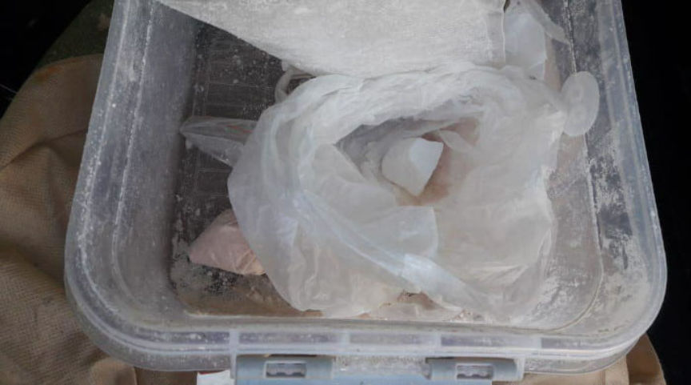
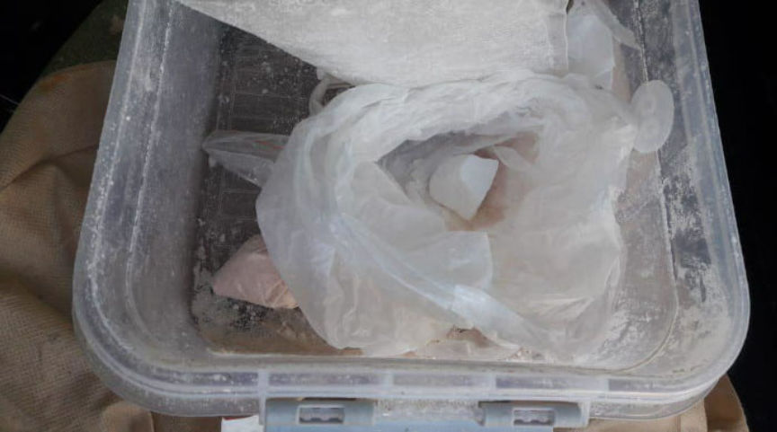

Five Sentenced for Selling Marijuana and Meth on Hydra
Saint-Petersburg city court pronounced a final judgment in the case of five methamphetamine and marijuana dealers who operated on Hydra, a russian-language darkweb marketplace. The dealers–Dmitry Vyugin, Alexander Golubev, Andrey Kokhan, Dmitry Kokhan, and Andrey Stoyko– received either prison sentences or shorter probation sentences.
Andrey Kokhan was the leader of the operation. In March 2018, Kokhan created a shop on HYDRA called “Quest.” Through the storefront, Kokhan advertised and sold marijuana, methamphetamine, and amphetamine. His accomplices planted dead-drops in Saint Petersburg.

Officers of the Federal Security Service (FSS) arrested the conspirators in July 2018. During the investigation into the dealers, law enforcement seized 3.32 kg of amphetamine, 200 grams of methamphetamine, 169 grams of marijuana, and 25 cannabis plants. They also found chemicals and growing equipment associated with large-scale marijuana production. Police also found the standard drug dealer’s toolkit while searching the homes of the drug dealers, such as electronic scales and plastic storage bags.
The court found all five defendants guilty of drug trafficking, possession with intent to supply, and production of controlled substances. Kokhan pleaded guilty and received a sentence of 18 years in prison. Dimitry received a 12-year prison sentence. Golubev will spend seven years behind bars. The court gave Vyugin and Stoyko five and seven years probation instead of prison time. Russian law allows a sentence of probation only when the defendant assists in the discovery of additional criminal activity.
Marijuana gaining popularity while drug-related crimes drop
From 2015 to 2019, the number of recorded narcotic violations in Russia decreased by 19.7%. Last year, police recorded 190,197 drug-related crimes and solved 102,771 of them. LEAs opened 113,651 trafficking and 510 smuggling cases. The proportion of crimes associated with controlled substances differs greatly across regions: from 12,8% in Khanty-Mansi Autonomous Okrug up to 24,4% in North Ossetia–Alania. In 2019, the area of outdoor cannabis grow sites increased by 16 times and reached 370 acres. Weight of seized marijuana rose by 42% up to 40 tons.
Andrey Kokhan was the leader of the operation. In March 2018, Kokhan created a shop on HYDRA called “Quest.” Through the storefront, Kokhan advertised and sold marijuana, methamphetamine, and amphetamine. His accomplices planted dead-drops in Saint Petersburg.

Seized Methamphetamine
Officers of the Federal Security Service (FSS) arrested the conspirators in July 2018. During the investigation into the dealers, law enforcement seized 3.32 kg of amphetamine, 200 grams of methamphetamine, 169 grams of marijuana, and 25 cannabis plants. They also found chemicals and growing equipment associated with large-scale marijuana production. Police also found the standard drug dealer’s toolkit while searching the homes of the drug dealers, such as electronic scales and plastic storage bags.
Cannabis Discovered During a Raid
The court found all five defendants guilty of drug trafficking, possession with intent to supply, and production of controlled substances. Kokhan pleaded guilty and received a sentence of 18 years in prison. Dimitry received a 12-year prison sentence. Golubev will spend seven years behind bars. The court gave Vyugin and Stoyko five and seven years probation instead of prison time. Russian law allows a sentence of probation only when the defendant assists in the discovery of additional criminal activity.
Marijuana gaining popularity while drug-related crimes drop
From 2015 to 2019, the number of recorded narcotic violations in Russia decreased by 19.7%. Last year, police recorded 190,197 drug-related crimes and solved 102,771 of them. LEAs opened 113,651 trafficking and 510 smuggling cases. The proportion of crimes associated with controlled substances differs greatly across regions: from 12,8% in Khanty-Mansi Autonomous Okrug up to 24,4% in North Ossetia–Alania. In 2019, the area of outdoor cannabis grow sites increased by 16 times and reached 370 acres. Weight of seized marijuana rose by 42% up to 40 tons.